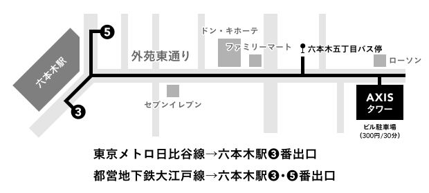

できごとのかたち展
2017.3.4(土) 3.5(日) 11:00~19:00
六本木AXISギャラリー 入場無料
展覧会概要
できごとのかたち展とは？
毎年六本木にて開催される、情報デザインコース2〜3年生の演習課題作品展です。 教員の推薦によって出展作品が決定し、展示計画や広報、設営にいたるまで、学生・教員スタッフの共同によってつくられています。
単なる作品展示ではなく、作品がつくられる過程や、製作者の想いまで展示することで、形態やメディアに限定されない多様な情報デザインを伝える 展覧会を目指しています。今年で10周年を迎えました。
イベント
トークショー
3.4(土)/3.5(日)
両日トークショー開催予定！
ワークショップ
3.4 11:00~19:00
3.5 11:00~19:00
上記の時間に製本ワークショップを開催します。
DMをお持ちの方は、本の表紙になるのでご持参ください。
作品集
comming soon!
会場

都営地下鉄大江戸線 六本木駅③・⑤番出口
東京メトロ日比谷線 六本木駅③番出口
バス
渋谷駅前（東口バスターミナルより）
都01 51番乗り場 新橋駅前行きまたは赤坂アークヒルズ行き：六本木駅前下車
渋88 59番乗り場 新橋駅前行き：六本木五丁目下車
会場
AXISギャラリー
〒106-003 東京都港区六本木5-17-1 AXISビル4F